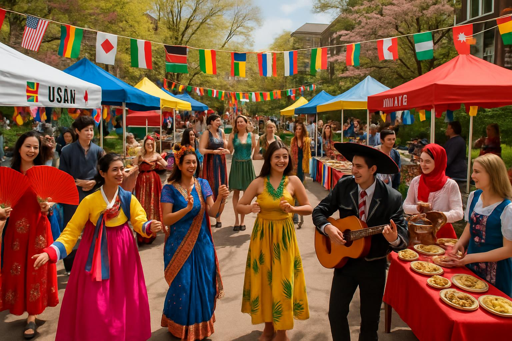

校园活动
枫山学院举办国际文化节

为期三天的国际文化节在我院成功举办，来自吉尔吉斯斯坦、哈萨克斯坦、乌兹别克斯坦等多个国家的学生展示了丰富多彩的文化传统。活动包括传统服饰展示、民族舞蹈表演、特色美食品尝等环节，促进了不同文化间的交流与理解。
3月15日至17日，枫山学院校园内洋溢着浓厚的国际文化氛围。来自15个不同国家和地区的学生们齐聚一堂，共同参与了这场盛大的国际文化节庆典。
多元文化展示
本次文化节设置了多个展示区域，每个国家的学生都精心准备了具有民族特色的展品。吉尔吉斯斯坦学生展示了传统的毡房模型和精美的手工艺品；哈萨克斯坦学生带来了马头琴演奏和传统舞蹈；乌兹别克斯坦学生则展示了精美的丝绸制品和传统乐器。
文化交流活动
活动期间，各国学生不仅展示了自己的文化特色，还积极参与其他国家的文化体验活动。中国学生教授书法和太极拳，俄罗斯学生分享了传统民歌，土耳其学生展示了精美的地毯编织技艺。这种互动式的文化交流让每位参与者都收获颇丰。
美食文化节
文化节的另一大亮点是国际美食展示。各国学生亲自制作了具有代表性的传统美食：吉尔吉斯斯坦的抓饭、哈萨克斯坦的马肉香肠、中国的饺子、韩国的泡菜等。师生们在品尝美食的同时，也了解了不同文化背景下的饮食习俗和制作工艺。
学院领导致辞
学院院长在开幕式上表示："国际文化节不仅是我们学院多元文化教育理念的体现，更是培养学生全球视野和跨文化交流能力的重要平台。通过这样的活动，我们希望每一位学生都能成为文化交流的使者，为促进不同文明间的理解与合作贡献力量。"
活动成果
本次国际文化节共吸引了全院800余名师生参与，收到了来自各方的积极反响。许多学生表示，通过参与文化节活动，不仅加深了对其他文化的了解，也增强了对自己民族文化的认同感和自豪感。
学院将继续举办此类国际文化交流活动，为构建更加包容、多元的校园文化环境而努力，培养具有国际视野的优秀人才。